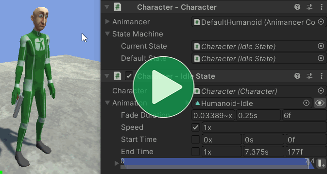
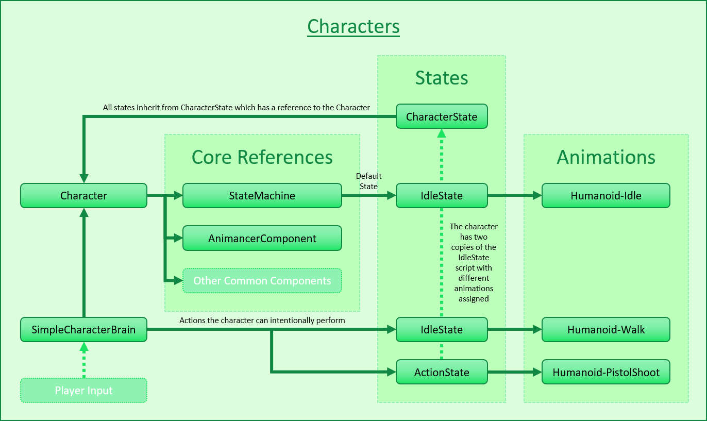
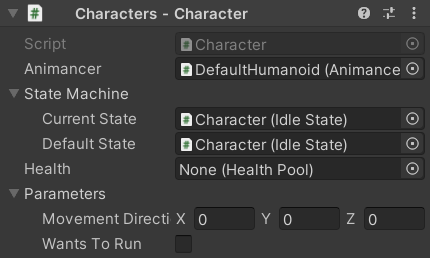
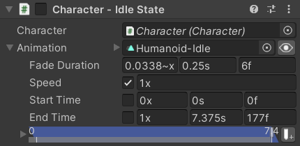
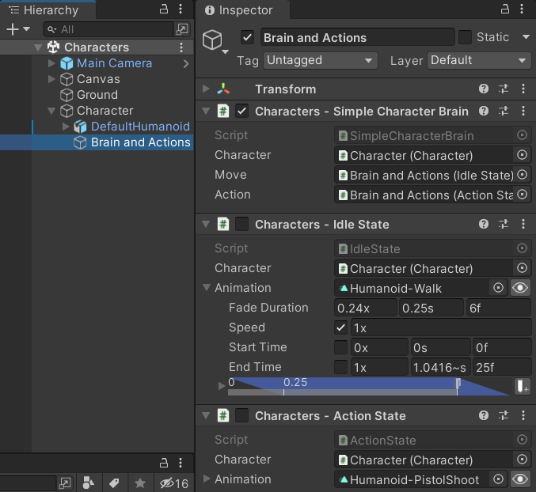

Location: Assets/Plugins/Animancer/Examples/06 State Machines/01 Character
Recommended After: Basic Character
Learning Outcomes: in this example you will learn:
How to use Animancer's Finite State Machine system.
A useful pattern for dividing character logic into multiple scripts.
Why dividing complex logic into multiple scripts is a good idea.
This example demonstrates how the logic from the Basic Character example can be divided into multiple scripts using Animancer's Finite State Machine system.

Summary
- This example doesn't teach any new animation concepts.
- It explains why you should split complex logic into multiple scripts and demonstrates how you can do so.
- It uses Animancer's Finite State Machine system, but the general concepts can be utilised in practically any system.
Controls
- W = Move.
- Left Click = Shoot.
Introduction
This example uses six scripts to achieve the same thing that BasicCharacterAnimations did in one script. Click here if you're wondering why that might be a good idea.
The BasicCharacterAnimations script has a lot of responsibilities squeezed into it:
- Reference all the character's animations.
- Set the Action animation to go to the Idle animation when it ends.
- Keep track of the character's current animation.
- Start with the Idle animation.
- When the character is not performing an action, allow them to Idle, Move, or perform an Action.
- When the character is performing an action, only allow them to restart the Action.
- Detect when the user Left Clicks and perform an Action if allowed.
- Detect when the user is holding the
Wkey and play the Move animation if allowed.
Doing so many things in one script violates the Single Responsibility Principle. It's not too bad for a very simple situation like these examples, but game characters are often far more complex than that and can benefit greatly from having a properly designed code structure:
- It makes it easier to accomodate changes throughout the development of a project as you add new features and try different things without breaking old code and needing to waste time fixing it.
- It can potentially allow you to reuse scripts in multiple different situations throughout a project and in future projects.
- It allows bugs to be found and fixed more easily, without breaking other code.
Sharing Logic
A mistake commonly made by inexperienced developers is to write classes with names like Player and Enemy which end up having a significant amount of identical code. This is not always the case, but in a lot of games the enemies follow the same general structure and rules as the player:
| Player | Enemy |
|---|---|
| Has a model or sprite that can be animated. | Has a model or sprite that can be animated. |
| Has a model or sprite that can be animated. | Has a model or sprite that can be animated. |
| Has a health pool and can take damage. | Has a health pool and can take damage. |
Has a Rigidbody or CharacterController for movement. |
Has a Rigidbody or CharacterController for movement. |
| Has a system for managing the actions it can perform. | Has a system for managing the actions it can perform. |
| Is controlled by user input from a controller/keyboard/mouse/etc. | Is controlled by some form of AI. |
Since there are so many similarities between them, it makes sense to structure their scripts in a way that allows them to share much of the same logic. Sharing logic is generally done by splitting it into multiple scripts and using Inheritance and/or Composition to connect them. This also helps adhere to the Single Responsibility Principle which aims to make code easier to reuse in different situations, easier to change throughout the development of a project, and easier to fix when bugs are found.
Overview
The general code structure in this example has been used effectively in a wide range of different situations (both with and without Animancer) but like all design patterns it can't be perfect for everything so you should always feel free to add your own variations or use a different approach entirely depending on the needs of your situation.
Here's an overview of the main parts which make up a character in this system:
| Script | Description |
|---|---|
| Character | A centralised group of references to the common parts of a character and their state machine. |
| State Machine | Determines what the character is currently doing and enforces the entry/exit rules defined by individual States. |
| States | Determine what the character could do and what actually happens when they do it. |
| Brain | Decides what the character wants to do (as a result of player input, AI, etc.). |
The code structure is much more complicated than the Basic Character example, but by the end of this example you should understand how it all fits together:

Character
The Character class is responsible for holding references to other systems so they can all be easily referenced in one place.
The Character is the core of any character, whether it be a player, enemy, NPC, person, animal, monster, or robot. A different term may be more suitable depending on the type of game you are making - for example, a strategy game might call it a Unit while a space game might call it a Ship - but the idea is always the same: all of the game's characters share the same standard script which holds references to each of its other components (and typically very little logic of its own). It references things like:
- The animation system (an
AnimancerComponentif you use Animancer, but otherwise it might just be anAnimator). - A state machine (this example uses Animancer's Finite State Machine system, but you can use any system you like).
- Any other common features that most characters have such as a
Rigidbody, character attributes, inventory, health pool, and so on.
Having this central script means that other scripts can simply have one reference to the Character and access all their other components through it. For example, the Action State wants to play an animation and then return the character to their Idle State. So instead of needing to reference the AnimancerComponent, StateMachine, and idle CharacterState, it just references the Character so it can access the Character.Animancer, Character.StateMachine, and Character.Idle.
It references the AnimancerComponent:
public sealed class Character : MonoBehaviour
{
[SerializeField]
private AnimancerComponent _Animancer;
And has an accessor Property so other scripts can use that reference but not re-assign it:
public AnimancerComponent Animancer => _Animancer;
The other fields aren't used in this example but are properly explained in later examples which reuse the scripts from this one:
| Code | Example |
|---|---|
|
Interruptions |
|
Brains |
|
Weapons |
In a real project, this is where you would also put references to things like a Rigidbody or CharacterController, a script that detects whether the character is currently on the ground, and character stats.
State Machine
The Character class also holds the StateMachine that will manage their actions. It uses the Serialized Field pattern explained on the Initialization page:
[DefaultExecutionOrder(-10000)]
public sealed class Character : MonoBehaviour
{
...
[SerializeField]
private CharacterState.StateMachine _StateMachine;
public CharacterState.StateMachine StateMachine => _StateMachine;
private void Awake()
{
StateMachine.InitializeAfterDeserialize();
}
}
The CharacterState class is explained properly below, but for now we're just interested in its nested StateMachine class which is using a State Machine with a Default State:
class CharacterState
{
[System.Serializable]
public class StateMachine : StateMachine<CharacterState>.WithDefault { }
...
}
Why is that StateMachine class inside CharacterState instead of Character?
Two reasons:
- The generic parameter is
CharacterStateso it makes sense for it to be explicitly associated with that class every time you access it. Characteralready has a property calledStateMachineso the class would need a different name likeCharacterStateMachine.
If those reasons seem very minor to you, that's because they are indeed very minor. Nothing would really change if you wanted to put it in the Character class or not have it nested at all. It simply comes down to your personal preferences.
States
The base State Type in this example is CharacterState.
It could Inherit from MonoBehaviour and implement IState, but it's easier to just Inherit from StateBehaviour:
public abstract class CharacterState : StateBehaviour
{
The nested StateMachine class was already mentioned above:
[System.Serializable]
public class StateMachine : StateMachine<CharacterState>.WithDefault { }
Every state has a reference to the Character it controls:
[SerializeField]
private Character _Character;
public Character Character => _Character;
And in order to avoid needing the user to manually assign the Character for every state, it has an OnValidate method which uses the Extension Method Approach to automatically find an appropriate reference nearby:
#if UNITY_EDITOR
protected override void OnValidate()
{
base.OnValidate();
gameObject.GetComponentInParentOrChildren(ref _Character);
}
#endif
That method needs to be in a #if UNITY_EDITOR block because the base method it overrides in StateBehaviour is also in a #if UNITY_EDITOR block.
There are also several more properties to determine which states can interrupt each other. They are explained properly in the Interruptions example:
public virtual CharacterStatePriority Priority => CharacterStatePriority.Low;
public virtual bool CanInterruptSelf => false;
public override bool CanExitState
{
get
{
// There are several different ways of accessing the state change details:
// var nextState = StateChange<CharacterState>.NextState;
// var nextState = this.GetNextState();
var nextState = _Character.StateMachine.NextState;
if (nextState == this)
return CanInterruptSelf;
else if (Priority == CharacterStatePriority.Low)
return true;
else
return nextState.Priority > Priority;
}
}
}
This example has 3 state types which inherit from that base:
Idle State
The Idle state is very simple, just a Transition which it plays when the state is entered:
public sealed class IdleState : CharacterState
{
[SerializeField] private ClipTransition _Animation;
private void OnEnable()
{
Character.Animancer.Play(_Animation);
}
}
CharacterState inherits from StateBehaviour which means it will automatically disable itself by default and then enable itself when the state machine enters the state. So the OnEnable method will effectively do the same as if we had used public override void OnEnterState().
Move State
There is no Move state script in this example because IdleState already does exactly what it needs, so the character simply has a second IdleState component with a different animation assigned.
The Brains example implements a proper MoveState to allow the character to actually move around the scene, including walking and running, as well as turning.
Action State
The Action state starts the same as the others but has a bit more complexity below:
public sealed class ActionState : CharacterState
{
[SerializeField] private ClipTransition _Animation;
private void OnEnable()
{
Character.Animancer.Play(_Animation);
}
Again, in a real project it would be better to remove that duplicated code and have ActionState Inherit from AnimatedState, but for the sake of simplicity this example keeps each state a bit more self-contained.
Unlike Idle and Move, this animation isn't looping so we want to return to Idle when it ends. Since the State Machine declared above has a Default State, we can easily set the animation's End Event to return to it:
private void Awake()
{
_Animation.Events.OnEnd = Character.StateMachine.ForceSetDefaultState;
}
It overrides the properties that control how it can be interrupted (which will be explained properly in the Interruptions example):
PriorityreturnsMediumso that it can interrupt theIdleStatebut not be interrupted by it (becauseIdleStateuses the defaultLowpriority from the baseCharacterState).CanInterruptSelfreturnstrueso that the character can still rapid fire like they could in the Basic Character example.
public override CharacterStatePriority Priority => CharacterStatePriority.Medium;
public override bool CanInterruptSelf => true;
}
Brain
A character's brain is responsible for deciding what they want to do. The Brains example explains why the system in general is designed the way it is, so this section only focusses on what this specific script does.
There are two things this character can choose to do: Move and perform an Action. So the brain has a Character to control and fields for each of those actions:
public sealed class BasicCharacterBrain : MonoBehaviour
{
[SerializeField] private Character _Character;
[SerializeField] private CharacterState _Move;
[SerializeField] private CharacterState _Action;
Then it has an Update method which is similar to the Update method in the Basic Character example, but this one is simpler because the responsibility of determining what the character can do at any given time is already handled by the State Machine:
private void Update()
{
UpdateMovement();
UpdateAction();
}
The UpdateMovement and UpdateAction methods are also very similar to the Methods in the Basic Character example and it avoids the extra complexity added in the Method Changes section because instead of directly telling Animancer to play animations it tells the character to try to enter states and leaves it up to those states to determine what actually happens:
private void UpdateMovement()
{
float forward = ExampleInput.WASD.y;
if (forward > 0)
{
_Character.StateMachine.TrySetState(_Move);
}
else
{
_Character.StateMachine.TrySetDefaultState();
}
}
private void UpdateAction()
{
if (ExampleInput.LeftMouseUp)
_Character.StateMachine.TryResetState(_Action);
}
}
There are several different methods of Changing States used there:
| Method | Effect | Why use it here? |
|---|---|---|
TrySetState |
Will do nothing if the character was already in the target state. | Because we call it every frame while the movement button is held and there's no point in repeatedly entering the Move state. |
TryResetState |
Will re-enter the target state if the character was already in it. | Because we want to allow Rapid Fire if the user clicks again while they were already performing the action. |
TrySetDefaultState |
Calls TrySetState with the Default State. |
Because the brain doesn't have a reference to the character's Idle state (it could be given one, but this way it doesn't need one). |
Scene Setup
Since we put all that effort into logically separating the character's scripts, it's worthwhile to logically group their scene objects as well to avoid ending up with a long list of components on a single object in the Inspector:
The Root Object has the Character and IdleState. In a real project, other components referenced by the Character such as a Rigidbody would also go here.

The Model has the Animator and AnimancerComponent. This allows the character's visuals to be rotated independently from the root character's physics or swapped out for something else. While setting up character prefabs this can allow you to simply make a copy of an existing one and replace its model while keeping the rest intact.

The Brain and Actions has the BasicCharacterBrain, MoveState, and ActionState on the same object because the brain is what controls those actions. Note that the ActionState's Animation has its Start Time ticked so that every time it is told to play it will set the time to 0 instead of letting it continue from where it was.

There are plenty of other ways the character could be structured. Some approaches are better than others, but in the end it mostly comes down to personal preference.
You could put each state onto its own GameObject, but that's a lot of performance overhead to have an additional GameObject and Transform for every state.
You might also be tempted to put the Brain on a separate object from the Actions, but that can be inconvenient because when you drag and drop the Actions object from the Hierarchy into a CharacterState field on the Brain Unity will simply assign the first CharacterState component instead of letting you pick which one you want to assign.
- Inspector Gadgets Pro solves this by showing a menu to let you pick which component you want.
- Otherwise, it is possible to use the following workaround but it's not very convenient:
- Right Click on the header tab of any Unity window (such as the Inspector) to open the context menu.
- Use the Add Tab menu to open another Inspector window.
- Select the Brain object.
- Click the Lock icon in the top right of one of the Inspector windows.
- Select the Actions object.
- Now the locked Inspector will be showing the Brain and the un-locked one will be showing the Actions so you can drag a specific state component into the field you want on the brain component.
With all that set up, now you can enter Play Mode to see the character in action:
What Next?
| Example | Topic |
|---|---|
| Interruptions | Ways of controlling which state changes are allowed and which aren't. |
| Brains | A deeper look into the concept of character brains. |
| Weapons | Equipping and attacking with various weapons that each have different animations. |
| Platformer Game Kit | A separate (free) package which demonstrates a much more complete character implementation for a 2D platformer game. |
| 3D Game Kit | A more complex character framework based on Unity's 3D Game Kit Lite. |